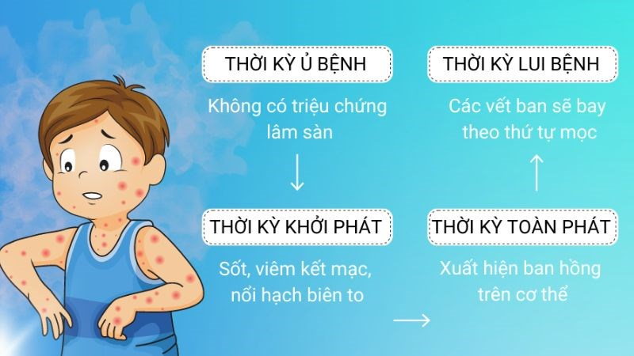

Bệnh sởi là gì? Những điều cần biết về bệnh sởi
Bệnh sởi là bệnh lây truyền cấp tính qua đường hô hấp, do virus thuộc giống Morbillivirus của họ Paramyxoviridae gây nên.
Sởi là một bệnh lưu hành rộng, vì thế bệnh liên tục xuất hiện trong cộng đồng, cộng thêm mức độ lây lan của bệnh rất nhanh nên rất dễ bùng phát thành dịch.
Lứa tuổi mắc bệnh chủ yếu ở trẻ dưới 10 tuổi, đặc biệt là trẻ nhỏ dưới 5 tuổi. Tuy nhiên, hiện nay bệnh đã xuất hiện ở người lớn do chưa được tiêm phòng hoặc đã tiêm phòng nhưng chưa được tiêm nhắc lại.
Đến nay, sởi vẫn là bệnh truyền nhiễm nguy hiểm gây dịch và là một trong những nguyên nhân tử vong ở trẻ em dưới 5 tuổi. Bệnh có tốc độ lây nhiễm rất cao, đặc biệt ở nhóm người chưa có miễn dịch phòng bệnh sởi do chưa được tiêm chủng vắc xin sởi, chưa từng mắc bệnh sởi trước đó.
Triệu chứng của bệnh sởi
Tùy theo từng giai đoạn mà các triệu chứng của bệnh Sởi sẽ có sự khác nhau:
Giai đoạn ủ bệnh: trung bình khoảng 10 ngày
Đây là giai đoạn bệnh chưa có triệu chứng nào cả.
Giai đoạn khởi phát (viêm long): 2 - 4 ngày
Lúc này người bệnh sẽ bị sốt cao, viêm kết mạc, viêm long đường hô hấp trên, bề mặt niêm mạc má có các hạt Koplik nhỏ kích thước 0,5 - 1mm màu trắng/xám với quầng ban đỏ nổi gồ lên.
Giai đoạn toàn phát: 2 - 5 ngày
Sau khi sốt cao 3 - 4 ngày bắt đầu xuất hiện tình trạng phát ban dạng ban hồng dát sẩn, nếu kèm da thì các ban này sẽ biến mất. Trình tự xuất hiện ban từ sau tai, gáy ra trước mặt, cổ rồi lan dần toàn thân, tứ chi, lòng bàn chân, lòng bàn tay. Khi ban mọc khắp cơ thể cũng là lúc thân nhiệt sẽ giảm xuống.
Giai đoạn hồi phục
Màu sắc các nốt ban nhạt dần rồi chuyển sang màu xám, bong vảy phần dạng màu sẫm để lại vết thâm trên da. Trình tự lặn của ban giống như lúc nó xuất hiện. Một số trường hợp sau khi hết ban sẽ bị ho kéo dài 1 - 2 tuần.
Nguyên nhân bệnh sởi
Sởi là bệnh truyền nhiễm cấp tính qua đường hô hấp do virus thuộc giống Morbillivirus, họ Paramyxoviridae gây ra.
Virus sởi có 2 kháng nguyên: Kháng nguyên tan hồng cầu (Hemolysin) và kháng nguyên ngưng kết hồng cầu (Hemagglutinin).
Virus sởi sau khi xâm nhập qua niêm mạc đường hô hấp hoặc kết mạc, bắt đầu nhân lên ở tế bào biểu mô và lây lan đến các hạch bạch huyết. Sau đó, virus vào máu và lan đến lưới nội mô khác.
Đối tượng nguy cơ
Những ai có nguy cơ mắc phải sởi :
Sởi có thể xảy ra ở bất cứ ai, bất cứ độ tuổi nào. Đặc biệt, trẻ em dưới 5 tuổi.
Yếu tố làm tăng nguy cơ mắc phải sởi :
Có rất nhiều yếu tố có thể tăng nguy cơ mắc bệnh này, như:
- Sởi rất dễ lây lan, sự lây truyền xảy ra khi tiếp xúc giữa người với người cũng như lây lan trong không khí. Sởi có thể lây truyền trong không gian nhỏ, ngay cả khi không tiếp xúc giữa người với người;
- Ở khu vực ôn đới, tỷ lệ mắc sởi cao nhất vào cuối mùa đông và đầu mùa xuân;
- Người có nguy cơ mắc bệnh sởi: Trẻ quá nhỏ chưa đến tuổi chủng ngừa, những người chưa được chủng ngừa;
- Du lịch đến khu vực lưu hành sởi hoặc tiếp xúc những người bị sởi đến từ các khu vực này sẽ làm tăng nguy cơ phơi nhiễm sởi;
- Nhóm người nguy cơ cao mắc biến chứng của sởi: Bệnh nhân suy giảm miễn dịch, người bị thiếu vitamin A hoặc tình trạng dinh dưỡng kém, phụ nữ có thai và người ở độ tuổi quá cao.
Chẩn đoán bệnh sởi
Chẩn đoán bệnh sởi thường dựa trên triệu chứng lâm sàng và lịch sử tiếp xúc với người mắc bệnh. Bác sĩ có thể yêu cầu xét nghiệm máu để xác định có sự hiện diện của kháng thể IgM sởi hoặc xác định nồng độ virus sởi.
Thông thường, sởi rất dễ bị nhầm lẫn với Rubella do có nhiều triệu chứng giống nhau. Để có thể phân biệt được hai căn bệnh này, có thể dựa vào một số điểm đặc trưng sau.
| Bệnh sởi | Bệnh Rubella |
|---|---|
|
- Triệu chứng của bệnh có thể kéo dài lên đến 10 ngày.
|
- Triệu chứng bệnh có thể kéo dài khoảng 5 ngày.
|
Phòng ngừa bệnh sởi
Do tính chất lây lan nhanh chóng và dễ dàng bùng phát thành dịch của Sởi, Bộ Y tế khuyến cáo mỗi người dân nên chủ động phòng ngừa bệnh này bằng cách:
- Tiêm vacxin phòng bệnh.
- Mỗi ngày cần vệ sinh sạch sẽ đường mũi, họng, mắt bằng nước muối sinh lý.
- Không dùng chung vật dụng cá nhân với người bị sởi.
- Làm sạch đồ chơi hay vật dụng bị nghi ngờ ô nhiễm dịch tiết mũi họng của người bệnh bằng nước diệt khuẩn hoặc xà phòng với nước sạch.
- Vệ sinh sạch sẽ môi trường sống, các bề mặt nghi ngờ tiếp xúc với người bệnh.
- Mở cửa sổ, cửa chính cho thông thoáng, để ánh nắng chiếu vào phòng ngủ, phòng học, phòng làm việc,…
- Trẻ nhỏ bị sởi cần được nghỉ học để tránh lây cho các bạn.
- Tránh tập trung nơi đông người, nơi chật hẹp hoặc ổ dịch.
- Tránh tiếp xúc với người bị sởi, nếu buộc phải tiếp xúc thì cần đeo khẩu trang y tế và găng tay.
- Nhanh chóng đến cơ sở y tế uy tín khi nghi ngờ các triệu chứng của bệnh Sởi để nhanh chóng được chẩn đoán đúng bệnh và có hướng điều trị hiệu quả.
Điều trị bệnh sởi
Việc điều trị bệnh sởi mang tính chất hỗ trợ, không có liệu pháp kháng virus sởi cụ thể được chấp thuận để điều trị bệnh sởi.
Nguyên tắc điều trị: Cách ly bệnh nhân sởi.
Biện pháp điều trị:
- Điều trị hỗ trợ
- Vệ sinh miệng họng, da, mắt.
- Hạ sốt.
- Cung cấp đầy đủ dinh dưỡng.
- Bổ sung vitamin A:
- Điều trị biến chứng:
- Điều trị kháng sinh khi bội nhiễm vi khuẩn./li>
- Hạn chế truyền dịch khi có biến chứng viêm phổi, viêm não hoặc viêm cơ tim.
- Điều trị hỗ trợ duy trì chức năng sống cho bệnh nhân khi viêm màng não cấp tính.